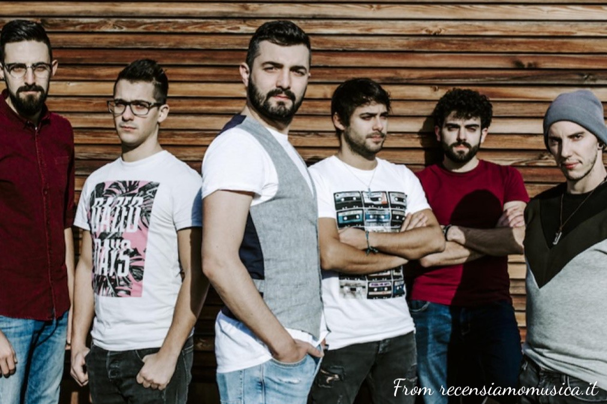
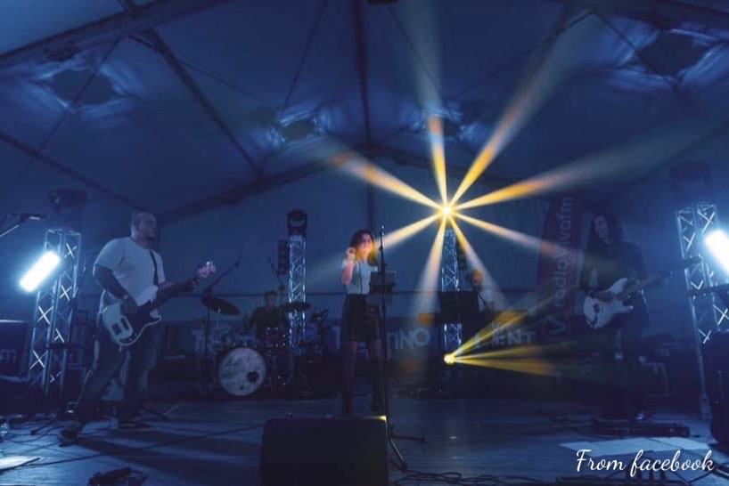
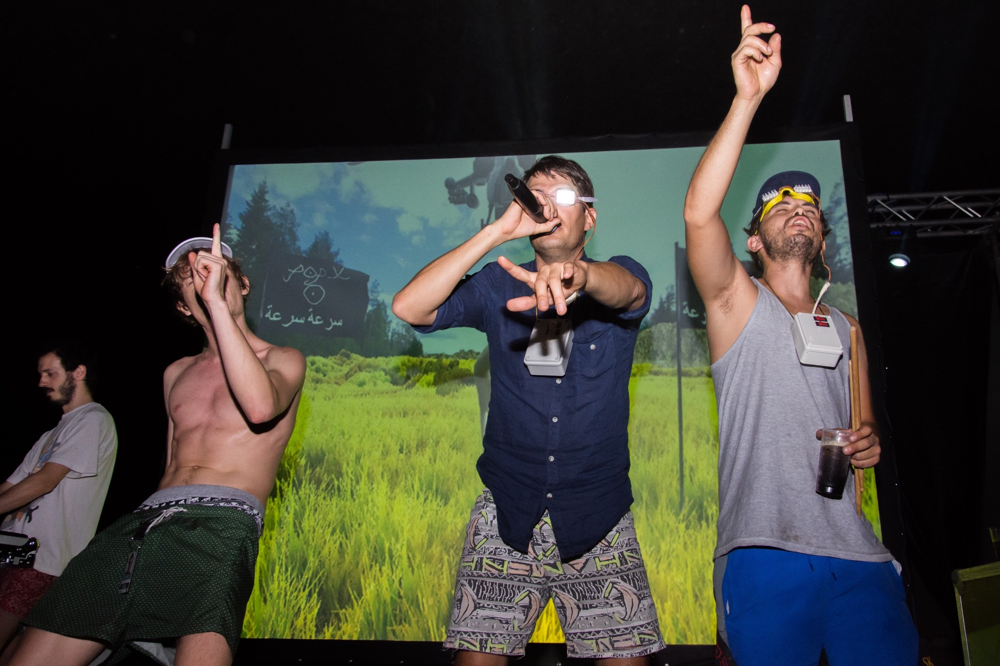
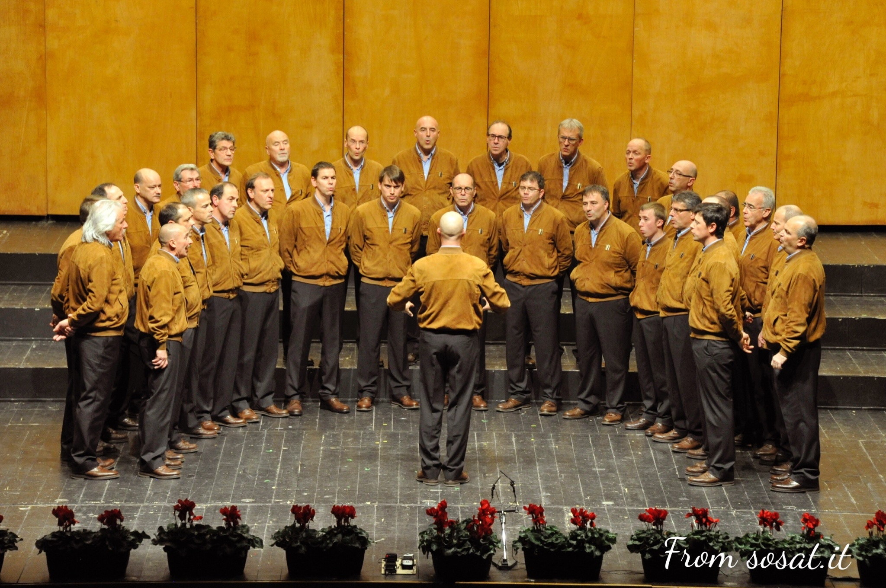
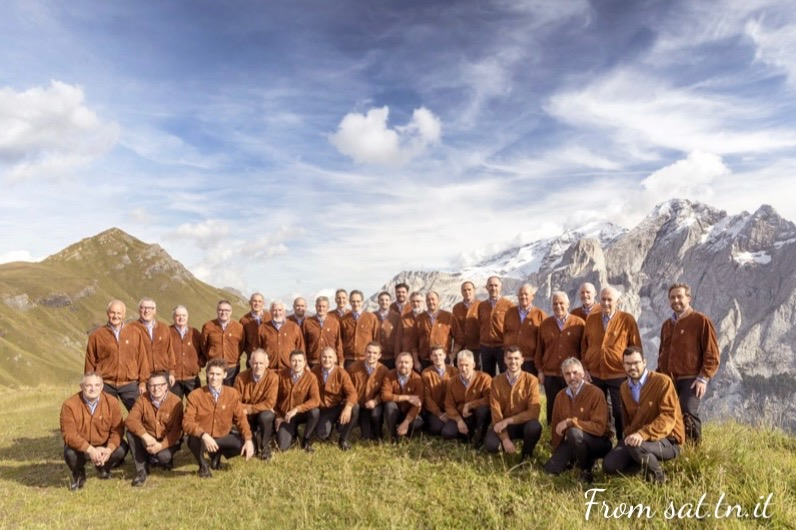
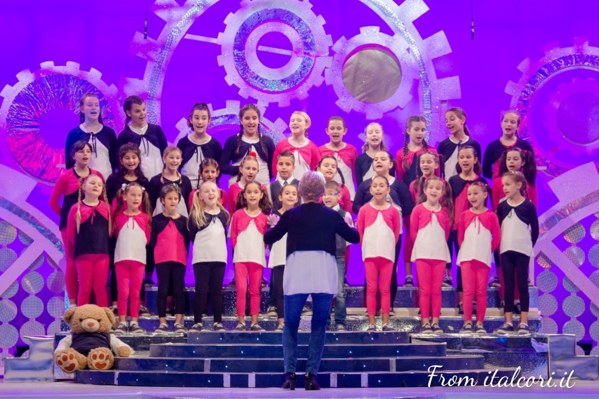

Musica Trentina -> Band di Trento

Poorworks
I Poorworks nascono a Mezzolombardo nel 2009. Amanti della musica inglese, il loro repertorio spazia da successi degli anni '70 e '80 ai tormentoni di oggi, in particolare dei Coldpaly. Sono due i dischi pubblicati dalla band.
Video
Social e contatti
Spotify

Anomina
Gli Anomina sono una band composta da giovani ragazzi. Nato nel 2019, il gruppo si sta facendo conoscere a livello locale grazie a numerosi concerti. I generi principalemente eseguiti sono pop e rock.
Video
Sociale e contatti

Pop X
Nati nel 2004, i Pop X sono la band trentina più conosciuta in Italia. I Pop X si destreggiano tra musica elettronica, techno e cantautorato. Numerosi sono i dischi pubblicati e i concerti tenuti in tutta Italia; tra gli inediti più famosi vi sono sicuramente "Seccio" e "Io centro con i missili".
Video
Social e contatti
Spotify
Musica trentina -> Cori di Trento

Coro della SOSAT
Nato nel 1926, è uno tra i cori più importanti del trentino, ha compiuto concerti anche in altre nazioni come Stati Uniti e Argentina. Il coro esegue principalmente canti trentini popolari. E' questo organo che incide per primo la canzone "La Montanara" e che pubblica per la prima volta dei CD di canti di montagna.
Video
Social e contatti
Sito web ufficiale

Coro della SAT
E' il coro maschile "di montagna" più famoso d'Italia. Nato nel 1926, ha viaggiato in tourne quasi tutta italia e molti paesi all'estero. Sono stati incisi 9 CD e all'interno di essi sono presenti numerosi inediti di musica tradizionale trentina.
Video
Social e contatti
Sito web ufficiale

Coro Piccole Colonne
Il coro Piccole Colonne è un coro di voci bianche nato nel 1987. Famoso è il concorso "Un testo per noi" indetto dal coro e disposto per tutte le scuole primarie, anche europee. Nel corso della sua storia sono stati pubblicati 37 CD e moltissimi inediti. Molte sono state le partecipazioni in trasmissioni televisive. Il repertorio del coro è principalemnte adatto a bambini.
Video
Social e contatti
Sito web ufficiale